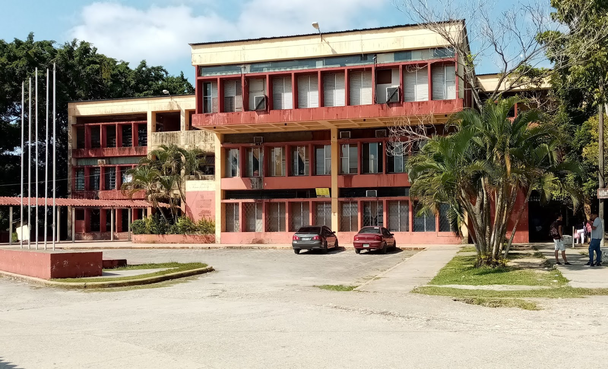
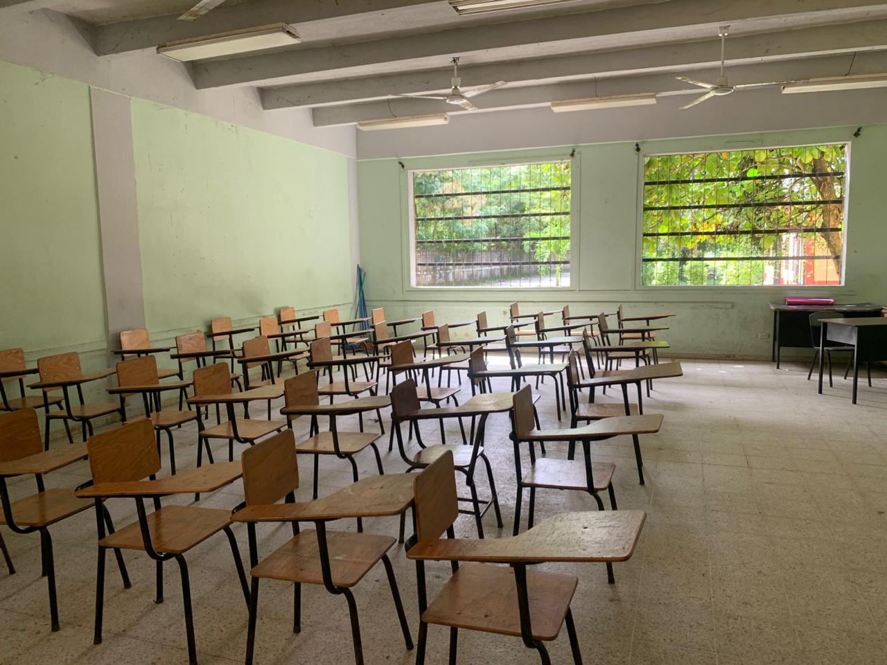
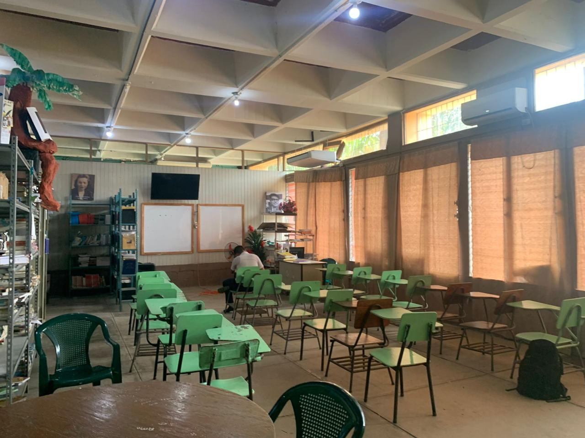
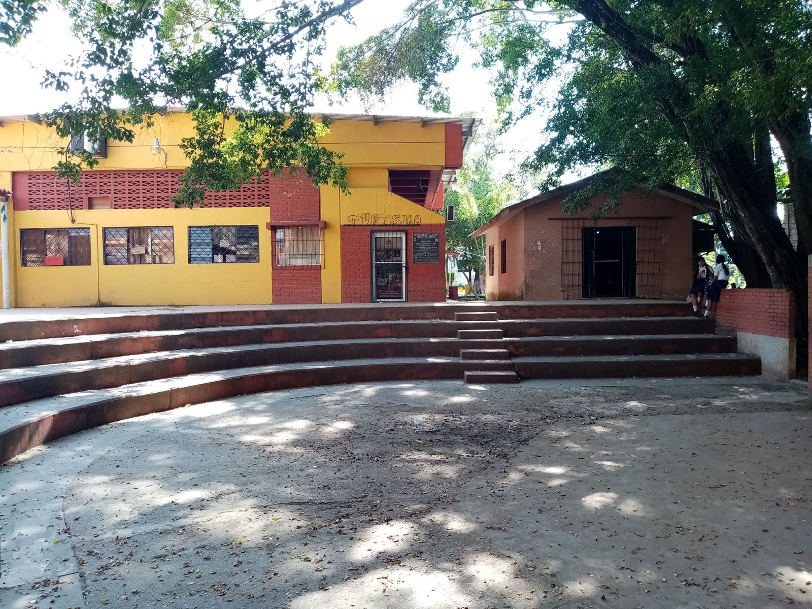
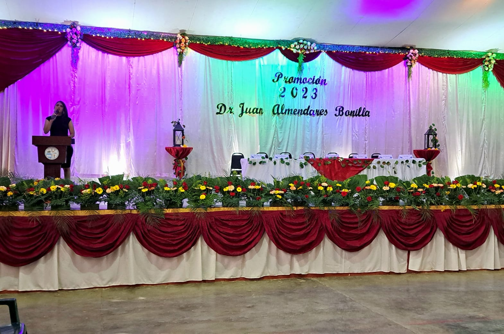

Instituto Franklin Delano Roosevelt
Bienvenidos al Instituto Franklin Delano Roosevelt, un lugar dedicado a la educación y al desarrollo de profesionales comprometidos con la sociedad.
Entrada del Instituto

Aulas Modernas


Área de Recreación

Actividades Estudiantiles

Conoce Nuestro Instituto